WikiMind is a personal LLM-powered knowledge OS. Drop in articles, papers, PDFs, or YouTube links. The LLM compiles them into structured wiki articles. Ask questions against the wiki. The system detects contradictions, orphans, and knowledge gaps. Synthesis generates cross-cutting analyses across sources.
Backend: FastAPI + PostgreSQL + Redis + ARQ workers. Frontend: React + TypeScript + Vite. Deployed on Fly.io with Docker.
Content Ingestion apiuicli
Inbox — Sources awaiting processing
Drop URLs, PDFs, or text. Each source is fetched, cleaned, chunked, and compiled into a wiki article by the LLM. Real-time progress via WebSocket.
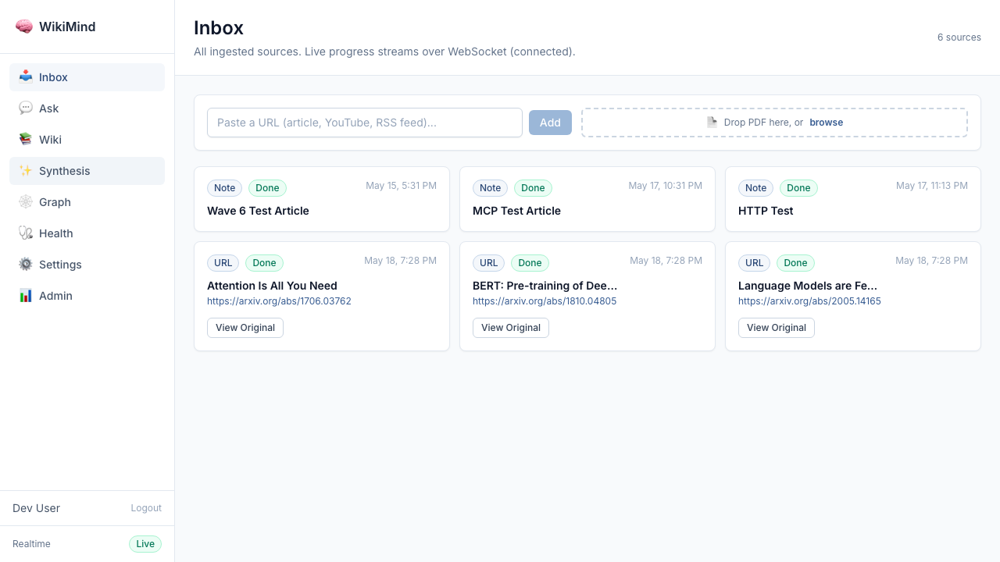
Source Detail — Pipeline artifacts
Full processing pipeline: Fetch → Extract → Clean → Compile. Shows author, token count, ingestion time, and compiled articles.
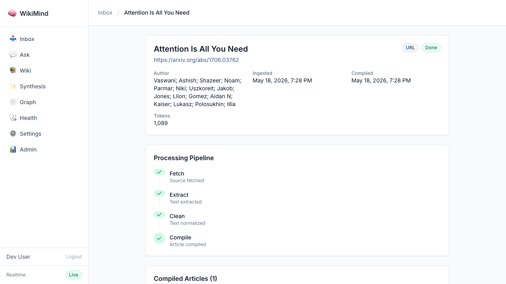
Supported formats
Format
Endpoint
Details
Web URL
POST /api/ingest/url
Articles, blog posts, documentation. Readability extraction.
YouTube
POST /api/ingest/url
Auto-detects YouTube URLs, extracts transcript.
PDF
POST /api/ingest/pdf
Upload up to 50 MB. Docling extraction for tables and figures.
Plain text
POST /api/ingest/text
Paste or send raw text content.
RSS feeds
POST /api/capture/rss/feeds
Subscribe to feeds. Auto-poll for new items.
API Evidence — Ingest arxiv paper
$ curl -X POST http://localhost:7842/api/ingest/url \
-H "Content-Type: application/json" \
-d '{"url":"https://arxiv.org/abs/1706.03762"}'
{
"source_type": "url",
"title": "Attention Is All You Need",
"source_url": "https://arxiv.org/abs/1706.03762",
"id": "393d1cac-83d0-4ec9-88a3-8b43b0f607bc",
"ingested_at": "2026-05-18T19:28:27",
"compiled_at": null ← compiling in background
}
Wiki & Knowledge Base uiapi
Wiki Explorer
Browse articles with concept facets. Filter by topic, confidence level, page type. Full-text search with ranking.
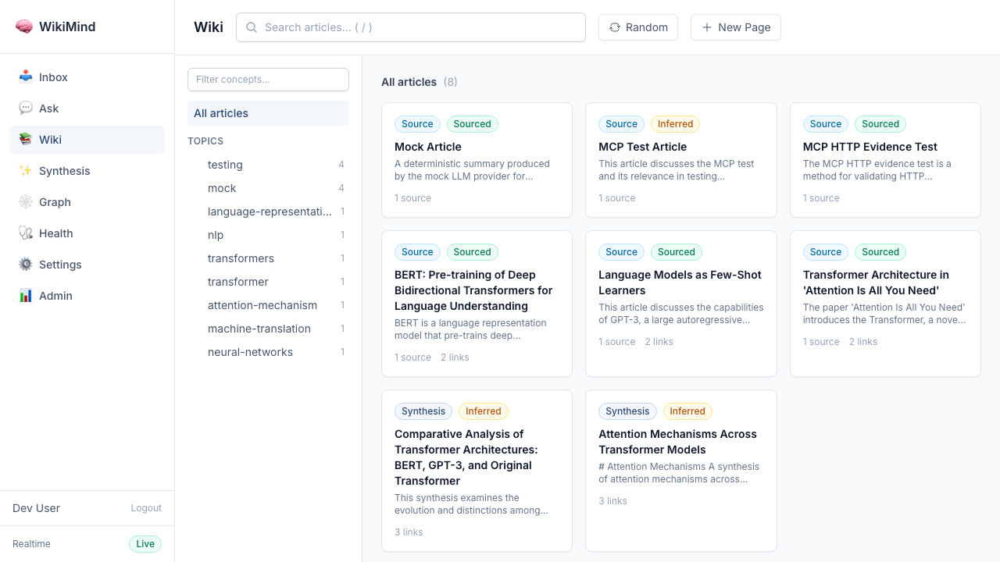
Article Detail
Structured articles with Summary, Key Claims (with confidence), Analysis, Open Questions, Related links, and Sources. Table of contents, backlinks, and concept tags in sidebar.
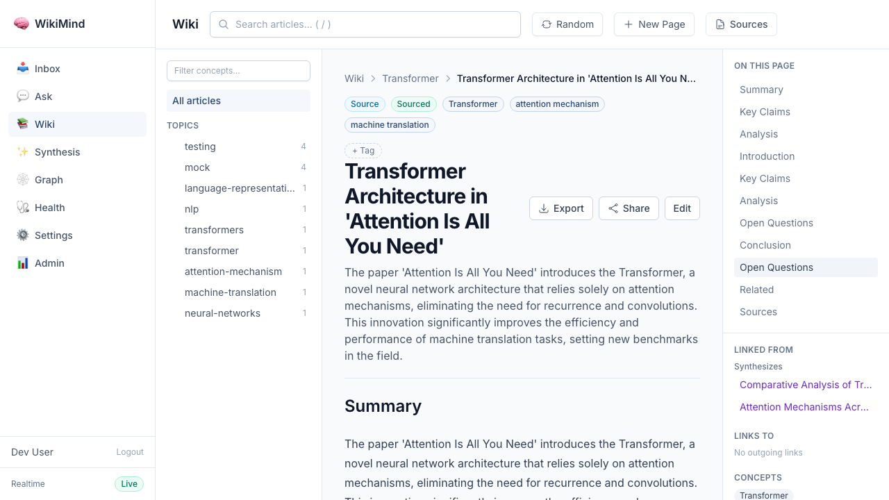
Key capabilities
LLM-compiled articles with key claims, confidence scores, and source citations
Concept taxonomy auto-extracted from content
Bidirectional backlinks ([[wiki links]]) resolved across articles
Interactive draft review: approve or reject compilations before publishing
Custom compilation schemas for different article types
Faceted search: filter by concepts, tags, confidence, page type
User-defined tags and saved searches
Rich Content Rendering ui
Articles rendered with full rich content support: extracted PDF figures and tables, LaTeX math, syntax-highlighted code blocks, and sanitized HTML. Images extracted via Docling are embedded inline with captions.
PDF Figures in Article
5 figures extracted from "The Geometry of Forgetting" (arxiv 2604.06222) rendered in the article's Figures & Tables panel with filter tabs and lightbox zoom.
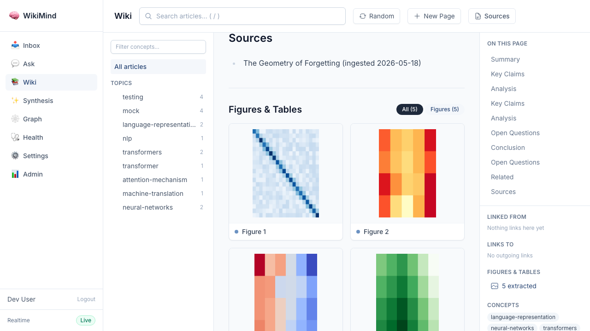
PDF Image Extraction (Docling)
Figures extracted from PDFs via Docling/pymupdf, stored in Postgres, served via authenticated API.
Table Rendering
Tables from PDFs preserved and rendered as styled HTML with zebra rows.
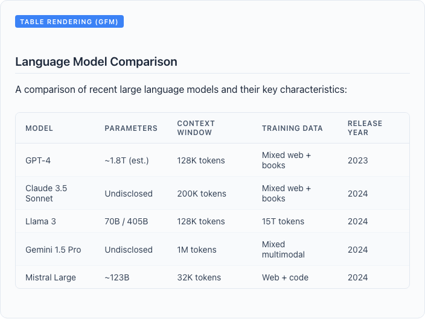
Math & Code
KaTeX for LaTeX math. Syntax-highlighted code blocks with GitHub theme.
Ask & Query uiapicli
Conversational Q&A
Ask questions against your wiki. RAG-powered answers with citations. Conversation threading with history. Fork conversations to explore tangents.
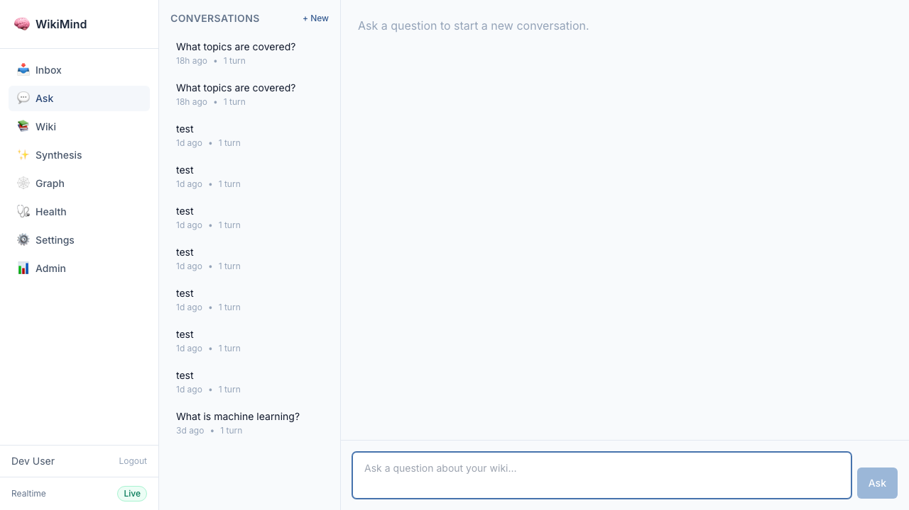
API & CLI
$ curl -X POST http://localhost:7842/api/query \
-H "Content-Type: application/json" \
-d '{"question":"How does BERT differ from GPT?"}'
{
"answer": "BERT uses bidirectional attention...",
"citations": [
{"article": "BERT: Pre-training of...",
"claim": "BERT pre-trains deep bidirectional
representations..."}
],
"conversation_id": "abc123"
}
# Streaming via SSE
POST /api/query/stream
# CLI
$ wikimind ask "How does BERT differ from GPT?"
Synthesis & Cross-Cutting Analysis uiapi
4-Step Synthesis Wizard
Guided wizard: choose type (Comparative, Chronological, Thematic, Gap Analysis), select articles, add guidance, review draft.
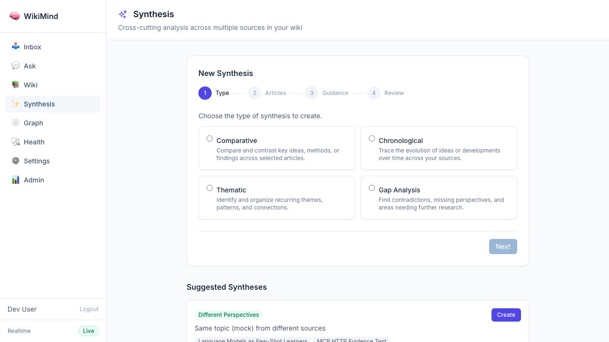
Auto-Detected Suggestions
System detects synthesis opportunities: shared concepts, active contradictions, same topic from different sources. One-click create.
Preview → Refine → Confirm workflow
Preview
POST /api/wiki/synthesis/preview
{
"article_ids": ["bert","gpt","transformer"],
"synthesis_type": "thematic",
"guidance": "Focus on attention"
}
Returns draft without saving
Refine
POST /api/wiki/synthesis/refine
{
"draft_content": "<previous>",
"article_ids": [...],
"guidance": "More detail on
cross-attention"
}
Iterates with feedback
Confirm
POST /api/wiki/synthesis/confirm
{
"title": "Attention Mechanisms",
"draft_content": "...",
"article_ids": [...]
}
Saves as real wiki article
API Evidence — Comparative synthesis across 3 arxiv papers
POST /api/wiki/synthesize
{ "query": "Compare transformer architectures", "synthesis_type": "comparative",
"article_ids": ["bert-id", "gpt-id", "transformer-id"] }
{
"title": "Comparative Analysis of Transformer Architectures: BERT, GPT-3, and Original Transformer",
"themes": ["Bidirectional vs. Autoregressive Models", "Attention Mechanisms", "Task Versatility"],
"source_count": 3,
"page_type": "synthesis"
}
Export & Sharing uiapi
Export Dropdown
Download as Markdown, Download as JSON, Copy as Markdown. Appears on every article detail page.
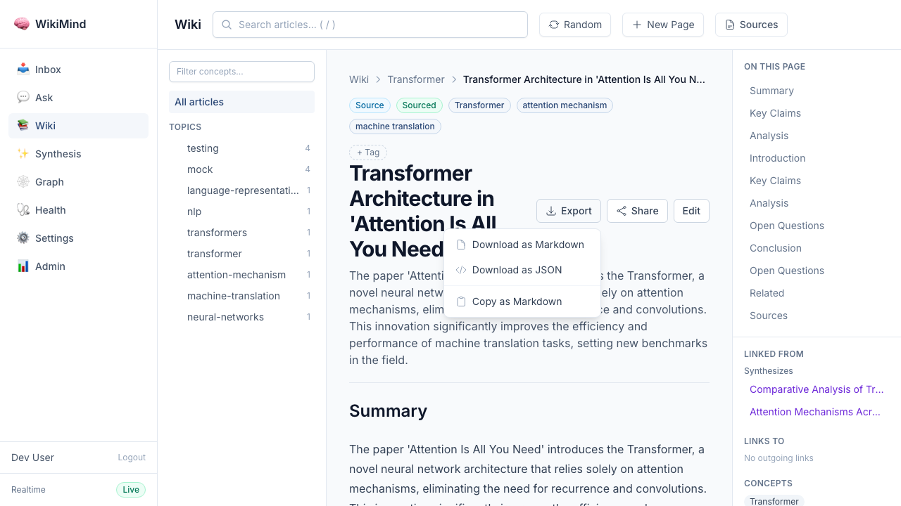
Share with Expiry
Create public share links with configurable expiry: 1 day, 7 days, 30 days, or never. Track view count per link.
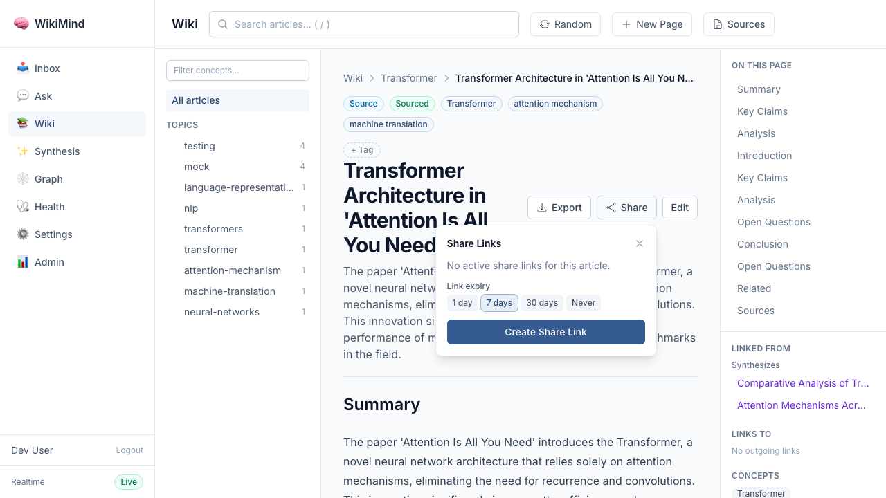
API Evidence
# Markdown export
GET /api/wiki/articles/{id}/export?format=markdown
HTTP/1.1 200 OK
content-type: text/markdown; charset=utf-8
content-disposition: attachment; filename="bert-...md"
---
title: "BERT: Pre-training of Deep Bidirectional..."
concepts: [language representation, NLP, transformers]
---
## Summary
BERT is a language representation model...
# Share link with 7-day expiry
POST /api/wiki/share-links
{ "article_id": "d65e8c6b-...", "expires_in_days": 7 }
{
"token": "o8K1dltPkbfFT-c48...",
"expires_at": "2026-05-25T19:29:53",
"view_count": 0,
"article_title": "BERT: Pre-training..."
}
# Full wiki export
POST /api/wiki/export/wiki
Formats: obsidian, markdown_json
Knowledge Graph uiapi
Interactive Visualization
Force-directed graph of articles linked by relationships: contradicts, supersedes, extends, synthesizes, references. Filter by concept, confidence, page type. Click nodes to navigate.
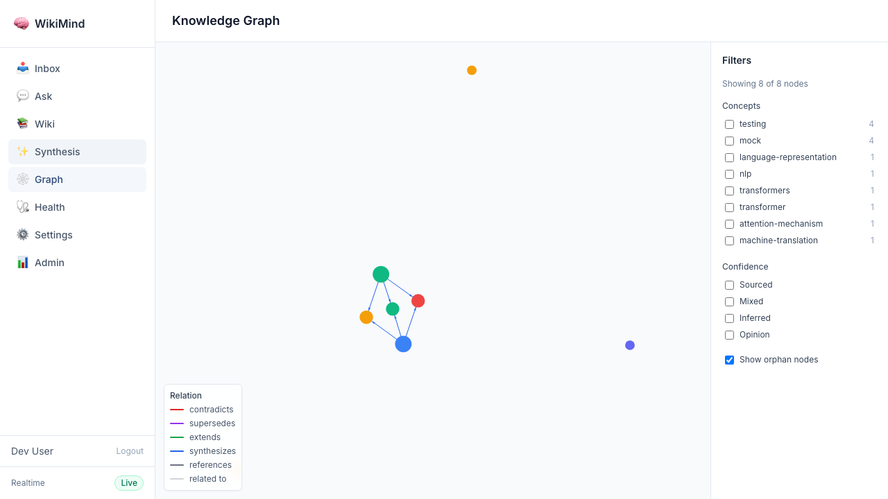
Relationship Types
▬
contradicts
Conflicting claims between articles
▬
supersedes
Newer article replaces older
▬
extends
Builds on another article
▬
synthesizes
Cross-cutting analysis
▬
references
Backlinks / wikilinks
GET /api/wiki/graph
{ "nodes": [...], "edges": [...] }
Used by frontend GraphView component
Quality Assurance & Linting engineapi
Automated wiki quality checks run on demand or via background jobs. Detects contradictions, orphaned articles, stale content, and missing links.
Contradiction Detection
LLM analyzes overlapping claims across articles. Surface conflicting statements with article context for resolution.
Orphan Detection
Finds articles with no inbound links. Suggests connections to related articles.
Staleness Tracking
Identifies articles not recompiled recently. Flags when source content has changed.
POST /api/lint/run # Trigger lint
GET /api/lint/reports # List reports
GET /api/wiki/contradictions # List contradictions with status
PATCH /api/wiki/contradictions/{id} # Resolve or dismiss
MCP Server — AI Agent Integration mcpapi
Exposes WikiMind as an MCP server for Claude Desktop, Cursor, and other AI agents. Two transports: stdio (local) and HTTP (JWT-authenticated remote).
13 Tools
wiki_overview
Stats
wiki_list_articles
Browse
wiki_list_concepts
Taxonomy
wiki_search
Full-text
wiki_get_article
Read
wiki_ask
Q&A
wiki_ingest_url
Add URL
wiki_ingest_text
Add text
wiki_get_source_status
Progress
wiki_synthesize
Analyze
wiki_get_health
Health
wiki_list_sources
Sources
wiki_get_graph
Graph
3 Resources
wikimind://index
Article TOC
wikimind://articles/{slug}
Article content
wikimind://sources/{id}
Source metadata
4 Prompts
wiki_onboarding
Orientation
research_topic
Research workflow
compare_articles
Comparison
knowledge_gaps
Gap analysis
Auth
OAuth 2.1 Authorization Server for Claude Desktop. JWT tokens for HTTP transport. Per-user access control.
System overview: users, articles, sources, concepts, claims, backlinks, orphans, compile rate. Content breakdown by page type, source type, status, and confidence. Operational health: queue depth, stuck sources, LLM traces.
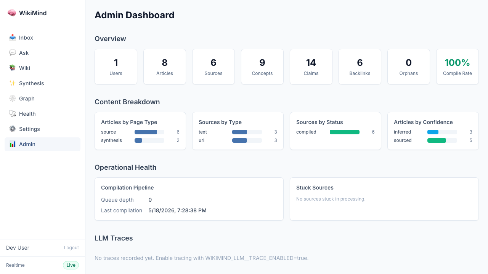
Endpoints
GET /admin/stats # System statistics
GET /admin/orphans # Orphaned articles
GET /admin/stuck-sources # Stuck in compilation
POST /admin/retry-stuck/{id} # Retry
POST /admin/sweep # Link sweep
POST /admin/reindex # Rebuild search
GET /admin/docling-status # PDF extractor status
GET /admin/traces # LLM trace logs
GET /health/deep # DB + service health
Real-time spend tracking per provider. Budget enforcement prevents runaway costs. API call counting and breakdown by task type (compilation, query, synthesis, lint).
Automated test of 138 API endpoints. Idempotent script creates test data and cleans up after itself. Endpoints that trigger LLM calls, require browser OAuth, or are destructive are skipped intentionally.